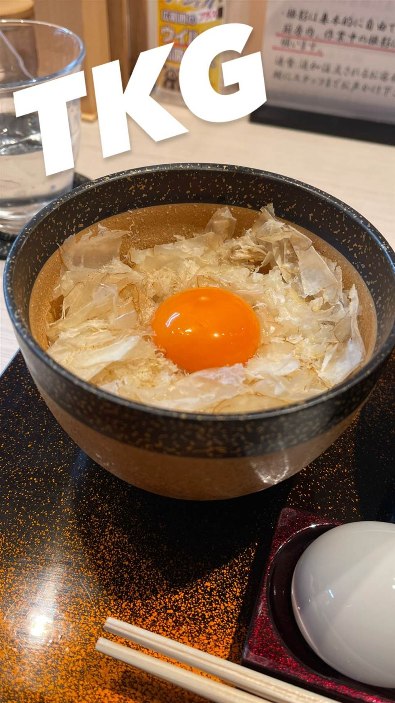

★ また行きたい醤油・中華そばで4位
入鹿TOKYO 六本木店
鶏・豚・貝・海老を別々に炊く独自のカルテットスープ
入鹿
入鹿TOKYO 六本木店は、東久留米の1号店に続き2021年10月にオープンした2号店。鶏・豚・貝・海老などを別々に炊いて合わせる独自の「カルテットスープ」を使ったラーメンが名物で、ミシュランガイドのビブグルマンを連続受賞している。

TRIVIA
豆知識
- 4種のスープを別々に炊いて合わせる「カルテットスープ」はラーメン史上初と謳う
- トリュフをのせた卵かけご飯がサイドメニューの名物
REVIEWS
世間の評判
98.9ラーメンDB
ポルチーニ薫る醤油と外国人客の行列
- ポルチーニの香りが強く立つ独自性のある醤油スープを評価する声が多い
- インバウンド客が多く行列の並び方が分かりづらいという声もある
- 現金不可で食券機のみの支払いに注意が必要だという意見がある
- 土日に比べると平日夜は比較的空いていて入りやすいという声もある
ラーメンデータベース 口コミ152件・総合19位・最新 2026-09
| 創業 | 六本木店は2021年10月10日オープン（東久留米の1号店に続く2号店） |
|---|---|
| 系譜 | 店主はAFURI・凪（なぎ）・一燈など有名ラーメン店での修行を経て東久留米に1号店を開業 |
| 看板 | ポルチーニ醤油らぁ麺、トリュフを添えた宝玉卵かけごはん |
| こだわり | 鶏・豚・貝・海老など複数の出汁を別々に炊き、提供直前に合わせる「業界初」と謳う無化調の“カルテットスープ” |
| 掲載・評価 | ミシュランガイド ビブグルマン 2023〜2026連続受賞 |
| どこから | 都心 |
| 行くなら | 行列 |
| 営業時間 | 月 休み 火〜土 11:00-21:00 日 休み |
| 予算 | 昼 ¥1,000～¥1,999 夜 ¥1,000～¥1,999 |
| 場所 | 六本木駅 東京都港区六本木4-12-12 穂高ビル1F |
| メモ | 六本木駅近く、行列ができる人気店 |
食べたもの：ラーメン / 卵かけご飯
NEARBY
近い店・同じ系統の店
-
 ★
醤油・中華そば 大口駅
中華そば 髙野
元美容師の店主が作る、昆布水に浸した自家製麺の中華そば
昼 ¥1,000～¥1,999 夜 ¥1,000～¥1,999
★
醤油・中華そば 大口駅
中華そば 髙野
元美容師の店主が作る、昆布水に浸した自家製麺の中華そば
昼 ¥1,000～¥1,999 夜 ¥1,000～¥1,999
-
 ★
醤油・中華そば 池尻大橋駅
八雲（やくも）
骨を一切使わないのに深いコクの特製ワンタン麺
昼 ¥501～¥1,000 夜 ¥501～¥1,000
★
醤油・中華そば 池尻大橋駅
八雲（やくも）
骨を一切使わないのに深いコクの特製ワンタン麺
昼 ¥501～¥1,000 夜 ¥501～¥1,000
-
 ★
醤油・中華そば 千歳船橋
中華そば 西川
永福町大勝軒などで8年修行した店主の煮干しそば、百名店5年連続
昼 ¥1,000～¥1,999 夜 ¥1,000～¥1,999
★
醤油・中華そば 千歳船橋
中華そば 西川
永福町大勝軒などで8年修行した店主の煮干しそば、百名店5年連続
昼 ¥1,000～¥1,999 夜 ¥1,000～¥1,999
-
 ★
醤油・中華そば 祖師ヶ谷大蔵駅
世田谷中華そば 祖師谷七丁目食堂
柴崎亭店主が手がける、煮干しと小豆島醤油の中華そば
昼 ～¥999 夜 ～¥999
★
醤油・中華そば 祖師ヶ谷大蔵駅
世田谷中華そば 祖師谷七丁目食堂
柴崎亭店主が手がける、煮干しと小豆島醤油の中華そば
昼 ～¥999 夜 ～¥999
-
 ★
醤油・中華そば 鷺沼
麺処 懐や
中村屋仕込み、一度に2杯しか作らない淡麗系
昼 ～¥999
★
醤油・中華そば 鷺沼
麺処 懐や
中村屋仕込み、一度に2杯しか作らない淡麗系
昼 ～¥999
-
 ★
醤油・中華そば 早稲田駅
自家製中華そば としおか
べんてんで12年修行、製麺機を譲り受けた中華そば
昼 ¥1,000～¥1,999 夜 ¥1,000～¥1,999
★
醤油・中華そば 早稲田駅
自家製中華そば としおか
べんてんで12年修行、製麺機を譲り受けた中華そば
昼 ¥1,000～¥1,999 夜 ¥1,000～¥1,999